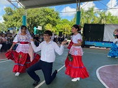

Danza
El folklore o folclore hace referencia a las creencias, prácticas y costumbres que son tradicionales de un pueblo o cultura. Esto incluye a los relatos, las artesanías, la música y los bailes, por ejemplo. La danza, por otra parte, es la acción de bailar, es decir, la ejecución de movimiento al ritmo de la música.

Musica
Puede decirse que la música es el arte que consiste en dotar a los sonidos y los silencios de una cierta organización. El resultado de este orden resulta lógico, coherente y agradable al oído.
Futbol
Vasquetbol
Voleibol
Teatro
Escolta
Banda de guerra